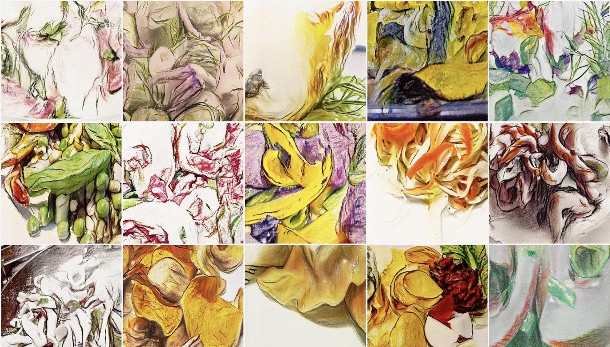

AI Gets Creative Thanks To GANs Innovations
Posted on 25/02/2019 by Jakub Langr
Posted in non-technical
For an Artificial Intelligence (AI) professional, or data scientist, the barrage of AI-marketing can evoke very different feelings than for a general audience.
For one thing, the AI industry is incredibly broad and has many different forms and functions, so industry professionals tend to focus more deeply on which branches of AI are being hyped today. This is also true because there are greatly varying degrees of progress across the different areas of AI.
Some subfields, such as computer vision, have seen only marginal progress, whereas other areas are growing by leaps and bounds every six months. One such area is Generative Adversarial Networks (GANs), which has developed from from synthesizing rather uninteresting 28x28 pixels images to full-HD images of human faces in about three years. These are completely novel images that require all the creativity and skills of a painter. The important part is that, for an AI practitioner, this changes the nature of how we think of AI capabilities because it means that the AI is capable of creativity. This means that AI can leave some of the more mechanical creativity to the machines and allow humans to re-focus on different tasks.
GANs are just a tool like any algorithmic breakthrough, albeit extensively applied into different sectors. For example, in medicine GANs have been used to help cancer detection¹ by creating new, realistic scans; they have been applied both defensively² and offensively³ in cybersecurity; and — cheating the expectations of many — GANs have been used in art. In fact, one of the art pieces generated by this technique sold for $432,500. There are now several artists dedicated exclusively to GANs, one of whom is Helena Sarin, whose work is pictured in this article.

The innovation of Generative Adversarial Networks is simple at its core. It starts with two networks, one is the generator (hence generative) and the other is called the discriminator, because it discerns the work of the generator. The networks compete against each other (hence adversarial), in an attempt to outperform each other. In the example of art, the generator acts as the art student trying to fool the discriminator into accepting its works as being the ‘real’ works of great artists. Meanwhile the discriminator, like a harsh art teacher, tries to distinguish between authentic works of art and those made by the student. Through this competition and feedback, both get better at their craft. In this way, GANs mimic creativity and counter-factual reasoning.
In medicine, as of mid-2018, there have been 63 medical papers published that used GANs in some capacity. These tend to focus on segmentation or synthesis in the majority of the cases and there are examples of GANs performing impressively in creatively figuring out missing information in diagnosing cardiac diseases, for example. The GAN-based approach has pushed the field further by providing a new, robust classification algorithm that matches all the other cutting-edge algorithms. Speculatively, it is plausible to believe that GANs could generate candidate surgical procedures in the future to augment the work of surgeons. Similarly, GANs have been applied in drug discovery and protein folding applications and in dentistry, where people are already using this in practice.
But with the ability to generate new data or imagery, GANs also have the capacity to be dangerous. A related, but algorithmically very different, technique has been making the rounds recently under the name “DeepFakes”, as in deep learning fake images. The ethical and geopolitical implications of this are vast because of its ability to create fake video footage of, say, political leaders discussing the use of military force against a country. Much has been discussed about the spread and dangers of fake news, but the potential of GANs to create credible fake footage is disturbing. If there is enough public footage, it may soon be possible to synthesize footage of events that never happened. Think of it as next generation Photoshop.
Ian Goodfellow, the creator of the GANs technique, was recently named as one of the Global Thinkers 2019 by Foreign Affairs. This is a major step towards AI being recognized as a key shaping force, especially in light of China’s aspirations for its AI industry to be worth $150 bn by 2030 and with European and other states spending tens of billions of dollars on AI budgets. Similar amounts were expended by the US alone, with sources claiming that in “its 2017 unclassified budget, the Pentagon spent approximately $7.4 billion on AI and the fields that support it.” Clearly, given the number of funds invested and the massive potential of this technology to shape the future geopolitical relations, the Foreign Affairs recognition should not come as a surprise.
These are some of the reasons why ethics is a key topic on everyone’s minds. I have covered this topic in my book, “GANs in Action: Deep learning with Generative Adversarial Networks”, with my co-author Vladimir Bok. GANs can do so much good for the world, but all tools have misuses. Here the philosophy has to be one of awareness: since it is impossible to “uninvent” a technique, it is crucial to to make sure that the relevant people are aware of this technique’s rapid emergence and its substantial potential.
Similarly, with this kind of growth and investment across all fronts of AI, advisory and professional groups are starting to emerge where industry professionals can meet, collaborate and discuss the benefits and dangers of techniques, such as the global network built by Brainpool.ai. In the future, I hope that these groups will go on to define public AI policy more than the public perception of AI and its dangers. Given the limited experience of politicians globally with AI, it’s vital that the industry informs the debate.
In spite of the more geopolitical aspects of GANs technology, GANs represent an exciting new technology that can bring creativity into otherwise seemingly pseudo-deterministic Artificial Intelligence landscape. Ultimately GANs could free people from worrying about low-level logistics of how to perform tasks and enable them to focus on high-level ideas. To that end, GANs are one of the brightest hopes in AI innovation .
Sources
¹ Korkinof, D., Rijken, T., O’Neill, M., Yearsley, J., Harvey, H., & Glocker, B. (2018). High-Resolution Mammogram Synthesis using Progressive Generative Adversarial Networks. Retrieved from https://arxiv.org/pdf/1807.03401.pdf
² badi, M., & Andersen, D. G. (2016). LEARNING TO PROTECT COMMUNICATIONS WITH ADVERSARIAL NEURAL CRYPTOGRAPHY. Retrieved from https://arxiv.org/pdf/1610.06918.pdf
³ Rigaki, M., & Garcia, S. (2018). Bringing a GAN to a Knife-Fight: Adapting Malware Communication to Avoid Detection. In 2018 IEEE Security and Privacy Workshops (SPW) (pp. 70–75). IEEE. https://doi.org/10.1109/SPW.2018.00019
GANs & applied ML @ ICLR 2019
I have just returned from ICLR 2019 in New Orleans and what a fruitful year that was on GAN papers-we saw papers on image synthesis (BigGAN), audio (WaveGAN), feature selection (KnockoffGAN), 3
AI Gets Creative Thanks To GANs Innovations
For an Artificial Intelligence (AI) professional, or data scientist, the barrage of AI-marketing can evoke very different feelings than for a general audience. For one thing, the AI indu
List of ICML GAN Papers
In all seriousness, however, I do respect greatly all the amazing work that the researchers at ICML have presented. I would not be capable of anywhere near their level of work so kudos to them
Comments